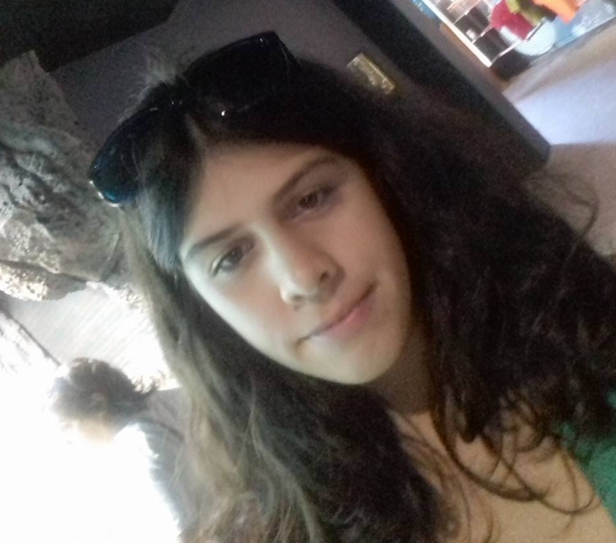

Maria Catarina Vieira Freitas

Resumo
Sou uma pessoa esforçada e dedicada. Procuro sempre aprender mais.
Educação
- Escola 1ºciclo de São Martinho (2006-2011)
- Escola 2º e 3º ciclos Dr.Horácio Bento de Gouveia (2011-2016)
- Tirei o curso de Ciências e Socioeconómicas no Liceu Jaime Moniz (2017-2021)
- Engenharia Informática - Universidade da Madeira (2021-atualmente)
Experiência de trabalho
Habilidades
Prémios e Certificações
Outro